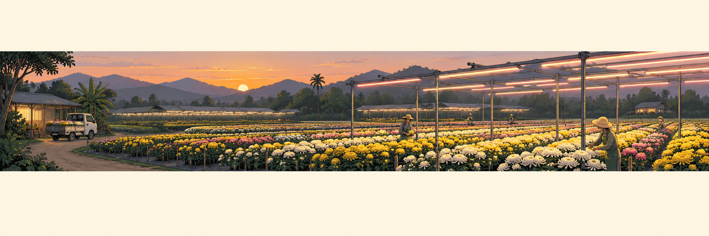
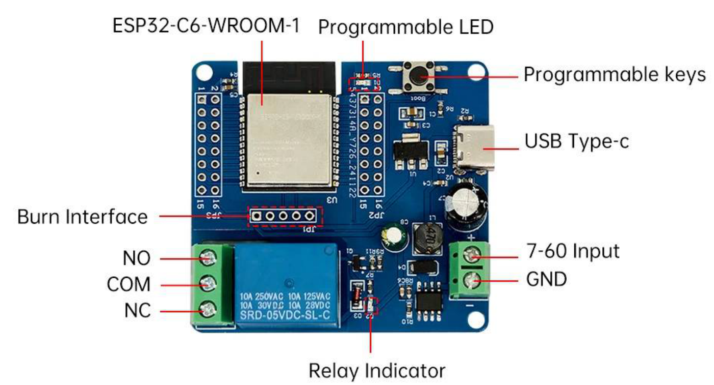
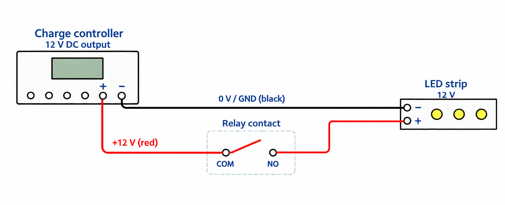
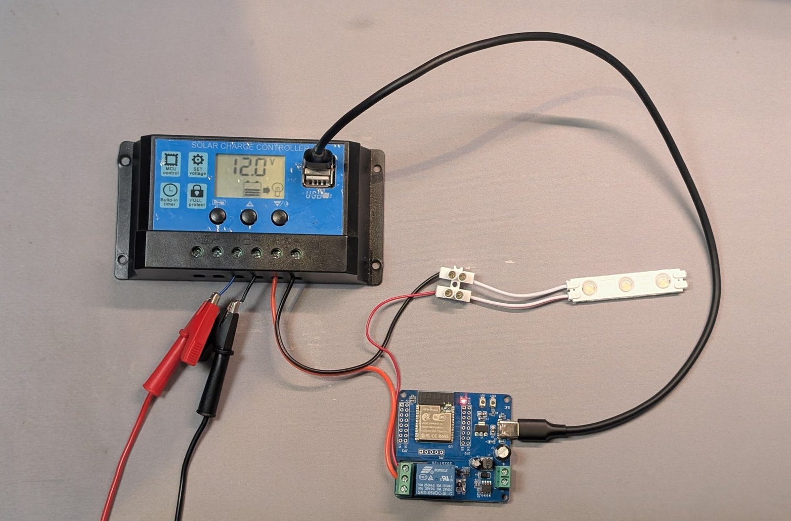

กิจกรรมที่ 2 — ต่อวงจรและสั่งงานหลอดไฟ (Act)

40 นาที
อุปกรณ์ที่ใช้ บอร์ดรีเลย์, กล่องจ่ายไฟ (charge controller), อะแดปเตอร์ 12V, สาย USB-C, แล็ปท็อป, สายไฟ, เต๋าต่อสาย, หลอด LED 12V, ไขควง
เริ่มจากลองสั่งรีเลย์โดยยังไม่ต่อหลอดไฟ เพื่อสังเกตการทำงานของสวิตช์ จากนั้นจึงต่อแหล่งจ่ายไฟและหลอดไฟ แล้วทดสอบว่าคำสั่งบนหน้าเว็บควบคุมหลอดไฟได้จริง
ใบงาน
คลิกชื่อหัวข้อเพื่อดูวิธีทำ เมื่อทำเสร็จให้ทำเครื่องหมายและบันทึกผลในช่องที่กำหนด กรอกที่นี่หรือในขั้นตอนด้านล่างก็ได้ คำตอบจะปรากฏทั้งสองจุด
- 2.1 รู้จักบอร์ดรีเลย์ ให้ทุกคนในกลุ่มชี้บนบอร์ดจริงว่าขั้วใดต่อไฟไปหลอดไฟ และขั้วใดห้ามต่อสาย
- 2.2 อ่านชื่อและหมายเลข IP แล้วลองสั่งรีเลย์ ชื่อบอร์ด IP สั่งรีเลย์จากสวิตช์บนหน้าเว็บและจากปุ่มบนบอร์ด แล้วถอดปลายสาย USB ออกจากแล็ปท็อป
- 2.3 รู้จักกล่องจ่ายไฟและวงจรหลอดไฟ หาขั้วไฟเข้า คู่กลาง (สัญลักษณ์แบตเตอรี่) ขั้วไฟออก คู่ขวาสุด (สัญลักษณ์หลอดไฟ) และช่อง USB สองช่องใช้จ่ายไฟเลี้ยงบอร์ดรีเลย์
- 2.4 ต่อสายวงจรหลอดไฟ ต่อสายให้ครบหกข้อโดยยังไม่เสียบปลั๊กอะแดปเตอร์ ให้อีกคนตรวจว่าสกรูแน่นทุกจุด ไม่มีปลายสายแตะกัน ไม่มีสายเข้า NC และ 7-60 Input / GND
- 2.5 จ่ายไฟและทดสอบหลอดไฟ หันเลนส์หลอดออกจากบอร์ด GoGo-IoT เสียบอะแดปเตอร์ แล้วสั่ง On ให้หลอดติด สั่ง Off ให้หลอดดับ
- คำถามท้ายกิจกรรม หากนำแนวคิดนี้ไปควบคุมปั๊มน้ำ 220V ในฟาร์มจริง ต้องพิจารณาอุปกรณ์และความปลอดภัยเรื่องใดบ้าง และควรให้ใครเป็นผู้ติดตั้ง ก่อนพัก สั่งรีเลย์เป็น Off แล้วดูว่าหลอดดับจริง
2.1รู้จักบอร์ดรีเลย์
บอร์ดรีเลย์เป็นบอร์ดคนละตัวกับบอร์ดเซนเซอร์ มีคอนโทรลเลอร์ของตัวเอง (ESP32-C6) และมีขั้วต่อสองกลุ่ม ดูตำแหน่งขั้วต่อจากแผนภาพนี้ก่อนต่อสาย

สำรวจขั้วต่อบนบอร์ด
- เทียบภาพกับบอร์ดจริง ให้ทุกคนชี้ขั้วที่ใช้ต่อหลอดไฟและขั้วที่ห้ามต่อสาย โดยดูตารางนี้ประกอบ
| ป้ายบนแผนภาพ | คือ | เราใช้ทำอะไร |
|---|---|---|
| NO / COM / NC | ขั้วรีเลย์ (บล็อกเขียว 3 ช่อง) | ใช้ COM กับ NO ให้ไฟ 12V ไปหลอดไฟ (ช่วงที่ 2 ไปปั๊ม) |
| 7-60 Input / GND | ขั้วไฟเข้า (บล็อกเขียว 2 ช่อง) | ไม่ใช้ ปล่อยว่างไว้ ห้ามต่อสายเข้า |
| USB Type-c | ช่อง USB | ไฟเลี้ยงบอร์ด ในข้อ 2.2 ใช้ไฟจากแล็ปท็อป ตั้งแต่ข้อ 2.4 ใช้ไฟจากกล่องจ่ายไฟ |
| Relay Indicator | ไฟแสดงสถานะรีเลย์ | ติดเมื่อรีเลย์ทำงาน ตั้งแต่ข้อ 2.5 เราจะดูไฟดวงนี้คู่กับหลอดไฟ |
| LED | ไฟแสดงการเชื่อมต่อ WiFi | ติดค้าง = ต่อ WiFi ได้ · กะพริบ = หลุด WiFi · ดับ = ไม่มีไฟ |
| Programmable keys | ปุ่มบนบอร์ด | กดสั่งรีเลย์ด้วยมือได้ แม้ไม่มี Home Assistant |
2.2อ่านชื่อและหมายเลข IP แล้วลองสั่งรีเลย์
อ่านข้อมูลบอร์ด
- เสียบสาย USB-C จากบอร์ดรีเลย์เข้าแล็ปท็อป (ยังไม่ต่ออย่างอื่นทั้งสิ้น)
- ทำเหมือนกิจกรรมที่ 1: web.esphome.io → Connect → เลือกพอร์ต → Logs & Console → กด Reset device ในหน้าเว็บ อ่านชื่อบอร์ด เช่น
gogo-relay-red-a1b2c3และหมายเลข IP ตรวจว่าสีในชื่อตรงกับโซนของกลุ่ม แล้วจดไว้ ชื่อบอร์ด IP ปิดหน้าต่าง
ทดสอบรีเลย์
- เปิดแท็บใหม่ไปที่
http://ตามด้วยหมายเลข IP ของบอร์ดรีเลย์ จะเห็น entity ชื่อ รีเลย์ (relay) เป็นสวิตช์ - กดให้เป็น On หนึ่งวินาที แล้ว Off ฟังเสียงคลิก และดูไฟ Relay Indicator ติดดับตาม
- กด ปุ่มบนบอร์ด หนึ่งครั้ง รีเลย์คลิกและสวิตช์บนหน้าเว็บเปลี่ยนตาม กดอีกครั้งให้กลับเป็น Off
เตรียมต่อวงจร
- ถอดปลายสาย USB ออกจากแล็ปท็อป ปลายฝั่งบอร์ดเสียบไว้ตามเดิม ในข้อ 2.4 เราจะย้ายปลายนี้ไปเสียบช่อง USB ของกล่องจ่ายไฟ
เสียงคลิกเกิดจากหน้าสัมผัสของรีเลย์เปลี่ยนตำแหน่งเพื่อเปิดหรือปิดวงจร ขณะนี้ยังไม่ได้ต่ออุปกรณ์ที่ขั้วรีเลย์ จึงได้ยินเพียงเสียงคลิก รีเลย์ทำหน้าที่เป็นสวิตช์ ไม่ได้จ่ายไฟให้หลอดไฟเอง เราจะต่อแหล่งจ่ายไฟและหลอดไฟในข้อ 2.4
2.3รู้จักกล่องจ่ายไฟและวงจรหลอดไฟ
สำรวจขั้วต่อและทางเดินไฟ
ชุดทดลองใช้ charge controller เป็นกล่องจ่ายไฟ ให้หลอดไฟและบอร์ด
- หาจุดต่อทั้งสามตำแหน่งบนกล่อง: ขั้วคู่กลาง (สัญลักษณ์แบตเตอรี่) คือไฟเข้าจากอะแดปเตอร์ · ขั้วคู่ขวาสุด (สัญลักษณ์หลอดไฟ) คือไฟออก 12V ไปหลอดไฟ · ช่อง USB สองช่อง ใช้จ่ายไฟเลี้ยงบอร์ดรีเลย์ (อีกช่องเก็บไว้ให้บอร์ด GoGo-IoT ตอนท้ายวัน)
หลอด LED ใช้ไฟ 12V หากต่อตรงกับแหล่งจ่ายไฟ หลอดจะติดตลอดที่มีไฟเข้า เราจึงต่อสายบวกผ่านขั้ว COM และ NO ของรีเลย์ เมื่อสั่ง On หน้าสัมผัสจะต่อถึงกัน วงจรจึงครบและหลอดติด เมื่อสั่ง Off หน้าสัมผัสจะแยกออกและหลอดดับ

2.4ต่อสายวงจรหลอดไฟ
ยังไม่เสียบปลั๊กอะแดปเตอร์ระหว่างต่อสาย และตรวจว่าถอดสาย USB ของบอร์ดรีเลย์ออกจากแล็ปท็อปแล้ว ต่อสายตามแผนภาพ แล้วให้สมาชิกอีกคนช่วยตรวจในข้อ 6
ต่อสายไฟและหลอด LED
- ต่อสายอะแดปเตอร์ 12V เข้า คู่กลาง (สัญลักษณ์แบตเตอรี่) ของ charge controller สายแดงเข้าบวก สายดำเข้าลบ อะแดปเตอร์นี้ทำหน้าที่แทนแบตเตอรี่ที่ชาร์จเต็ม
- ต่อสายของหลอด LED เข้าเต๋าต่อสาย โดยแยกสายบวก (มีแถบแดง) และสายลบไว้คนละจุด
- ต่อสายจากขั้วลบของ คู่ขวาสุด (สัญลักษณ์หลอดไฟ) บนกล่องจ่ายไฟ ไปยังจุดต่อสายลบของ LED ที่เต๋าต่อสาย
- ใช้สายสองเส้นต่อทางเดินไฟบวก: เส้นแรกจากขั้วบวกของ คู่ขวาสุด บนกล่องจ่ายไฟไปยัง COM ของรีเลย์ เส้นที่สองจาก NO ไปยังจุดต่อสายบวกของ LED ที่เต๋าต่อสาย
ต่อไฟเลี้ยงบอร์ด
- เสียบปลายสาย USB ของบอร์ดรีเลย์เข้าช่อง USB ของกล่องจ่ายไฟ โดยยังไม่เสียบปลั๊กอะแดปเตอร์
ตรวจวงจรก่อนจ่ายไฟ
- ตรวจว่าสกรูทุกตัวขันแน่น ไม่มีปลายสายเปลือยแตะกัน ไม่มีสายเข้าขั้ว NC และไม่มีสายเข้าขั้ว 7-60 Input / GND

ทำไมรีเลย์ต่ออยู่ที่สายบวกเพียงเส้นเดียว กระแสไฟจะไหลได้เมื่อวงจรครบ การเปิดหน้าสัมผัสรีเลย์ที่จุดเดียวจึงทำให้หลอดดับได้ ในวงจร 12V นี้ เราให้รีเลย์ตัดต่อสายบวก ส่วนสายลบต่อกลับไปยังกล่องจ่ายไฟโดยตรง
2.5จ่ายไฟและทดสอบหลอดไฟ
จัดอุปกรณ์และจ่ายไฟ
- วางหลอด LED ให้เลนส์หันออกจากบอร์ด GoGo-IoT และห่างจากบอร์ดอย่างน้อย 30 ซม. ไม่อย่างนั้นแสงจากหลอดจะย้อนเข้าเซนเซอร์แสงของบอร์ด และทำให้ระบบสั่งเปิด–ปิดไฟสลับไปมาในกิจกรรมที่ 3
- เสียบอะแดปเตอร์เข้ารางปลั๊ก จอ charge controller ควรติดและแสดงแรงดัน ไฟบนบอร์ดรีเลย์ควรติด รอ 30 วินาทีให้บอร์ดต่อ WiFi
ทดสอบการเปิด–ปิด
- เปิดหน้าเว็บของบอร์ดรีเลย์อีกครั้งที่หมายเลข IP เดิม (หากเปิดไม่ได้ ให้ทำตามคำแนะนำใต้ขั้นตอนนี้เพื่ออ่านหมายเลข IP ใหม่)
- กดสวิตช์เป็น On หลอดต้องติด กด Off หลอดต้องดับ ทำซ้ำสองสามครั้ง สังเกตว่าไฟ Relay Indicator ติดดับพร้อมหลอด การที่หลอดติดและดับตามคำสั่งยืนยันว่าอุปกรณ์ทำงานจริง ไม่ใช่เพียงสถานะบนหน้าจอเปลี่ยน
- ถ้าหลอดไม่ติดแต่รีเลย์คลิก ให้สั่ง Off ถอดอะแดปเตอร์ แล้วตรวจสอบวงจรอีกครั้ง
ถ้าจอ charge controller ไม่ติด ให้ถอดอะแดปเตอร์ก่อน แล้วตรวจการต่อสายข้อ 1 ถึง 6 ใหม่ ถ้าจอติดแต่บอร์ดรีเลย์ไม่ติด ให้เสียบสาย USB ให้แน่นหรือลองช่อง USB อีกช่อง ถ้าหน้าเว็บของบอร์ดเปิดไม่ขึ้นหลังรอหนึ่งนาที ให้ย้ายปลายสาย USB จาก charge controller มาเสียบแล็ปท็อปชั่วคราวเพื่ออ่านหมายเลข IP ใหม่ (บอร์ดจะเริ่มใหม่และรีเลย์เป็น Off) แล้วย้ายกลับ
คำถามท้ายกิจกรรม หากนำแนวคิดนี้ไปควบคุมปั๊มน้ำ 220V ในฟาร์มจริง ต้องพิจารณาอุปกรณ์และความปลอดภัยเรื่องใดบ้าง และควรให้ใครเป็นผู้ติดตั้ง
เตรียมก่อนพัก
- สั่งสวิตช์รีเลย์เป็น Off จากหน้าเว็บของบอร์ด และดูว่าหลอดดับจริง